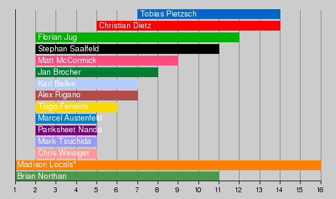

Conference 2015 Hackathon
There was a hackathon in Madison following the ImageJ Conference 2015.
Contents
Topic
There were two primary topics for this hackathon:
- Learnathon. For the first half, we covered the current ImageJ2 and SciJava APIs with informal presentations and workshops. We spent some time beefing up and updating the tutorials.
- Ops. The second half focused on development of the ImageJ Ops component for "write once, run anywhere" image processing. We added more algorithms and routines to the core library, and continued polishing the Ops framework itself, as well as the ImageJ2 data model.
Side projects
As always, there were lots of other exciting collaborations going on, too!
- Troubleshoot the SCIFIO-ITK-bridge in SimpleITK (Mark + Matt)
- Generalize MATLABCommands to a general framework that could be used in BAR (Mark + Tiago)
- The ImageJ-OMERO plugin (Alex + Curtis)
- SciJava robust-io redesign (Curtis)
- SCIFIO blockization (Mark)
- Coloc2 bugs? (Ellen)
- KNIME paper (Mark + Christian)
Participants

* Madison locals include:
- Ellen Dobson
- Kevin Eliceiri
- Mark Hiner
- Yuming Liu
- Guneet Singh Mehta
- Curtis Rueden
- Alison Walter
- Jay Warrick
- Leon Yang
Some people were not present at the hackathon on weekends.
Locations
Thursday, September 3 - Friday, September 4
ImageJ 2015 conference at the H.F. DeLuca Forum, Wisconsin Institutes for Discovery, 330 N. Orchard St., Madison, WI 53715.
- Directions: Directions to the Discovery Building
- Maps: Google map, Campus map
- Parking: Lot 17, Lot 20, Lot 80
Saturday, September 5 - Friday, September 11
WAR Room (B1121), Wisconsin Institutes for Discovery, 330 N. Orchard St., Madison, WI 53715.
Schedule
We had a group lunch on Wednesday, September 9 from noon - 1pm. (There was single reservation conflict with B1121 during this time.)
Saturday, September 12 - Tuesday, September 15
Room 224 Animal Sciences, 1675 Observatory Dr. [See map]
The hackathon formally concluded on September 15 at 3:30pm.